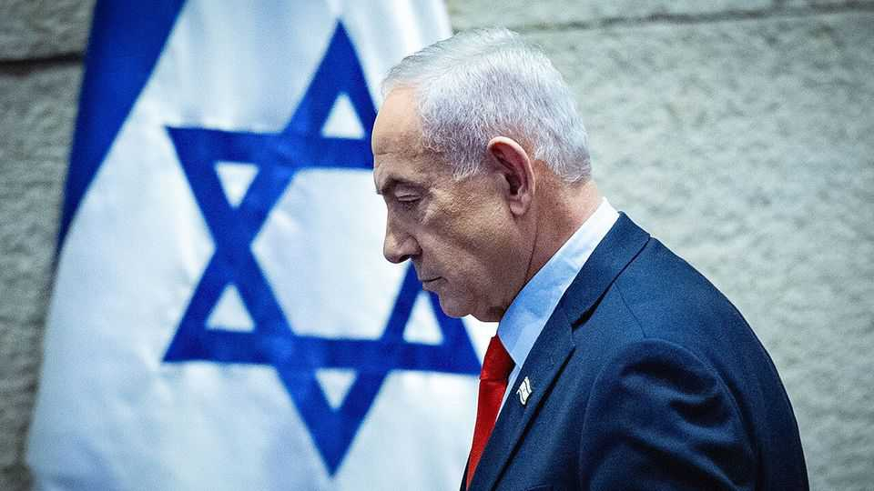

Israel’s Jewish and Arab opposition parties should work together
If they want to dislodge Binyamin Netanyahu from office, they need to act fast

Oct 29th 2026
IN MOST DEMOCRACIES when opposition parties win the most votes, and secure a majority in parliament, they strive to form a government. In Israel, however, nothing is quite so simple. With 90% of the ballots counted on October 28th, the opposition parties were between them sure to have more than half—probably 67—of the 120 seats in the Knesset, Israel’s parliament. In theory, therefore, the right-wing coalition led by Binyamin Netanyahu should be swept from office.
In practice, the opposition may well prove too divided to form a ruling coalition. Of those 67 seats, about 19 are in the hands of parties representing Israel’s Arab minority. During the campaign, most opposition-party leaders explicitly ruled out forming a government with them. When pressed, Gadi Eisenkot, a former general and the leader of Yashar, a centre-right party that took the second-largest share of the vote, was evasive. Yet without the backing of Arab parties, he stands little chance of forming a stable government.
There is no fundamental justification for excluding the Arabs, who make up one-fifth of the population. But they have long been sidelined. In Mr Netanyahu’s first election campaign as leader of Likud, in the 1990s, his supporters ran with the slogan: “Netanyahu. Good for the Jews.” When he triumphed, the defeated centre-left candidate, Shimon Peres, remarked that “Israelis lost” whereas “Jews won.”
The vilification of Israeli Arabs continues. Members of Mr Netanyahu’s most recent coalition included Jewish supremacists, such as Itamar Ben-Gvir, the national-security minister. He once led the youth wing of a virulently anti-Arab movement that went on to be banned in 1994 as a terrorist organisation. In September the Knesset’s election committee barred Arab parties from the election, alleging they supported terrorism and rejected Israel’s Jewish character. The Supreme Court overturned that. On election day, right-wingers in the streets exhorted Jewish voters to “save our home” from Arabs.
Neither are anti-Arab attitudes confined to the right. Most Jewish opposition parties go along with Mr Netanyahu’s demonisation of the Arab parties. The attacks of October 7th 2023, when Hamas massacred Israelis, made it a lot harder to counter such attitudes. Scaremongering has led many Jewish voters to fear that Arab-Israelis would like to see Israel destroyed. And though Arab-Israeli politicians did condemn the violence in 2023, some of them, shamefully, would not condemn Hamas as terrorists.
There is a path ahead. Israeli-Arabs responded to recent anti-Arab hysteria in the best way possible, by voting in large numbers. And there is a precedent for Arab parties to be included in governments—they are full citizens of Israel, after all. In 2021 Mr Netanyahu himself sought support from Ra’am, a moderate Islamist party, for his coalition. Though that failed, Ra’am later joined a different, short-lived, grouping led by Naftali Bennett.
A coalition of opposition parties, including the Arab ones, should thus pull together, and fast. Isaac Herzog, Israel’s president, needs to judge that co-operation is possible, with a new coalition led by Mr Eisenkot, or he will opt to invite Mr Netanyahu to try first because Likud is the largest party. Mr Netanyahu has also, of late, pressed for renewed military strikes on Iran. And his government has been inflaming tensions in the Israeli-occupied West Bank. If large-scale violence resumes in either place he might argue that Israel needs him to stay on and lead an emergency “unity” government.
Israelis were under no illusions about this election’s significance. For many it was a referendum on Mr Netanyahu. Some in the opposition spoke of “saving Israeli democracy”. If they really believe that, then their decision is straightforward: work with the Arab-Israeli parties to form a coalition. ■